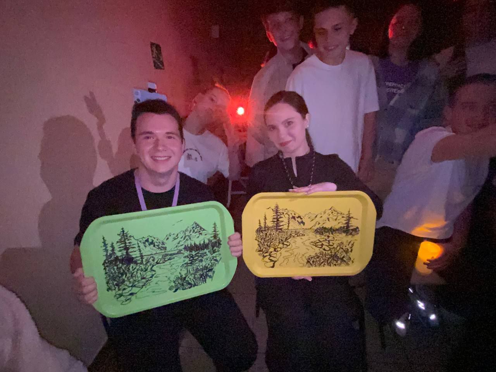

Пребывание в лагере
С 25 марта по 7 апреля учащаяся Анастасия Иванова посетила всероссийский детский лагерь «Смена». Программа смены включала образовательные лекции, творческие мастер-классы и спортивные мероприятия.
Особый интерес Анастасия проявила к танцам, активно участвуя в культурной жизни лагеря. Также она попробовала себя в декоративно-прикладном искусстве — расписала подносы, которые позже были вручены вожатым в качестве памятных подарков.
По словам участницы, эта смена стала для нее полезным и ярким опытом, позволившим приобрести новые знания и навыки.
